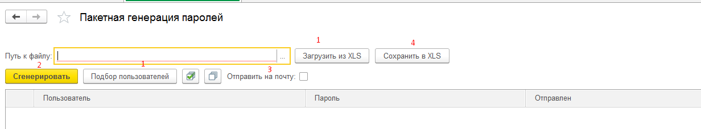

Порядок работы с формой:
1. Нажать кнопку "Подбор пользователей" и выбрать пользователей которым необходимо сгенерировать новый пароль или загрузить пользователей из файла Excell. В файле excell колонка пользователей должна быть первой, загрузка со строки 2. Возможна загрузка из файла сохраненного с помощью кнопки "Сохранить в XLS"(4).
2. При необходимости установить флаг "Отправить на почту". В этом случае будет выполнена попытка отправить письмо на адрес указанный в пользователе.
3. Нажать кнопку "Сгенерировать". Если установлен признак "Отправить на почту" то после генерации пароля будет отправлено письмо, после чего пароль сохраняется в пользователе.
4. При необходимости можно сохранить результат обработки в Excel файл нажав кнопку "Сохранить в XLS".
Повторное нажатие кнопки "Сгенерировать" инициирует повторную генерацию пароля в случае если в колонке "Сохранен" не указано "ОК", также проводится отправка почтового сообщения если в колонке "Отправлен" не установлено значение "ОК". При неудачных действиях сохранения и отправки письма в колонках "Сохранен" и "Отправлен" указана причина.
Для Пользователей с правами ПолныеПрава пароль не генерируется и не отправляется.
Команда "Заполнить список":
Выбрать сразу всех действительных пользователей, кроме пользователей с ролями ПолныеПрава, АдминистраторСистемы, Администрирование, или включенной аутентификацией операционной системы. Текущий список выбранных пользователей перез заполнением будет очищен.